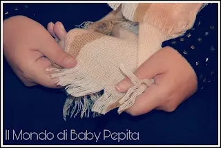
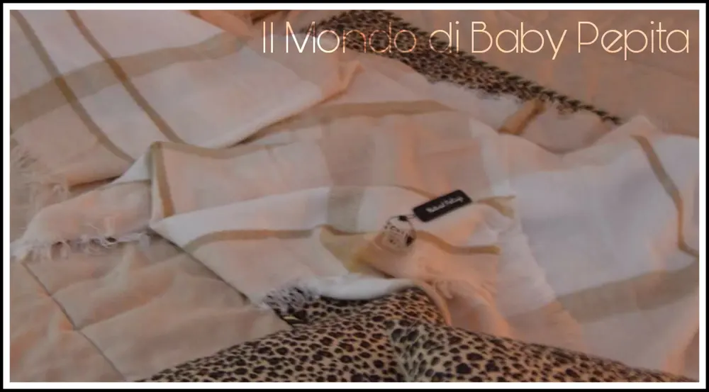
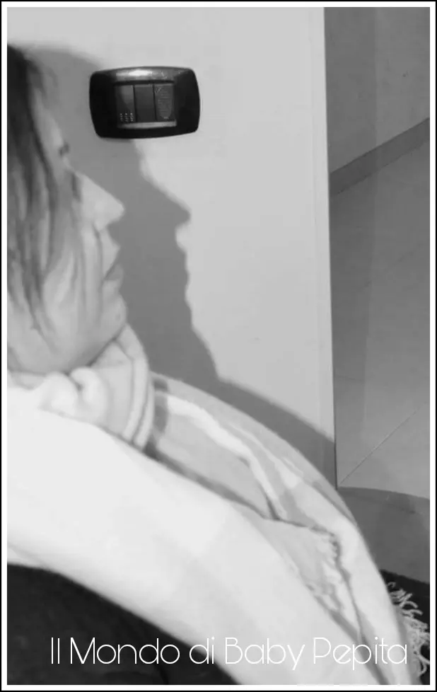
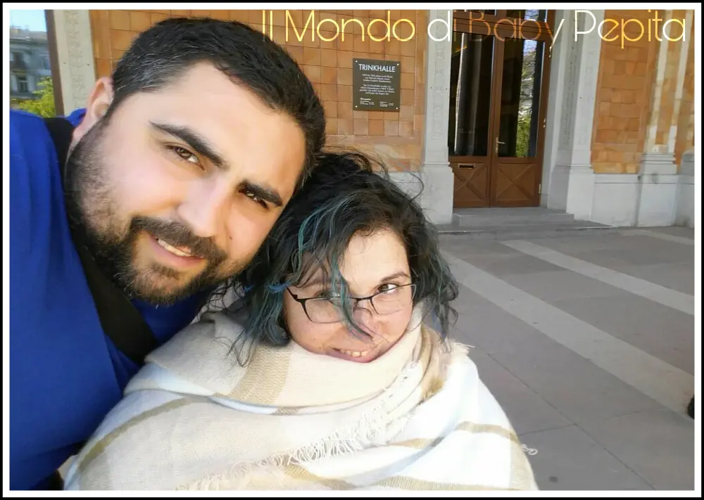
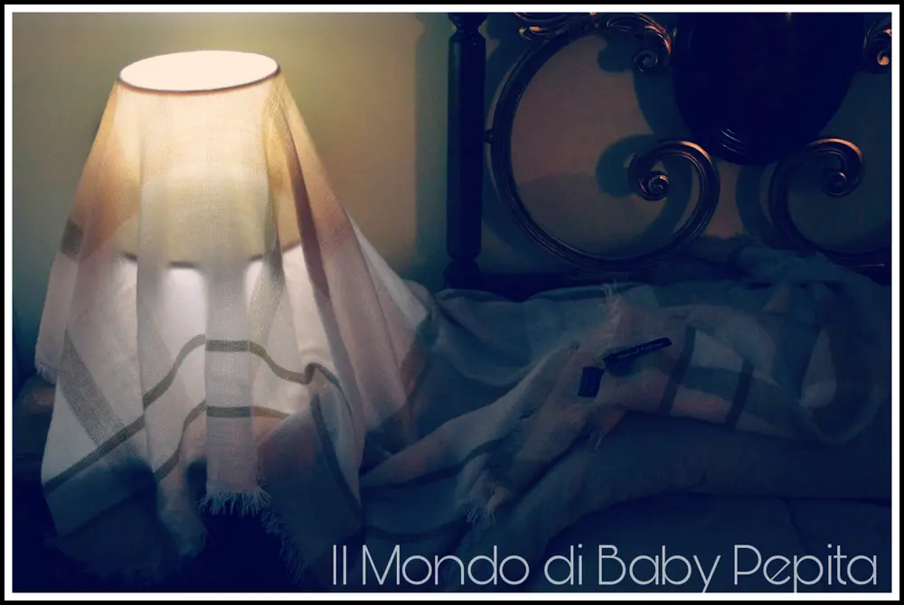
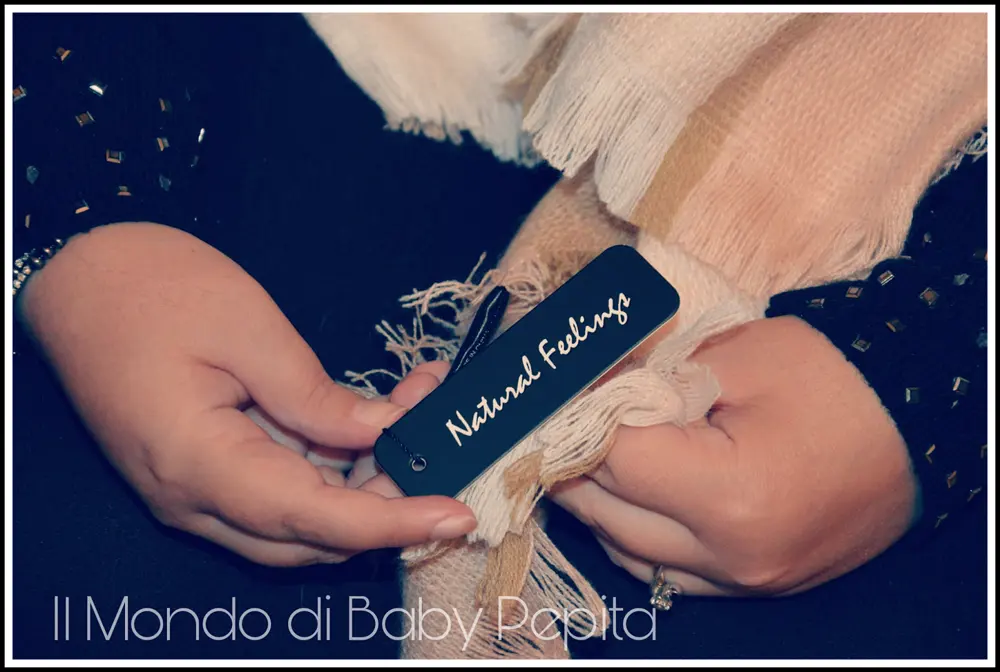
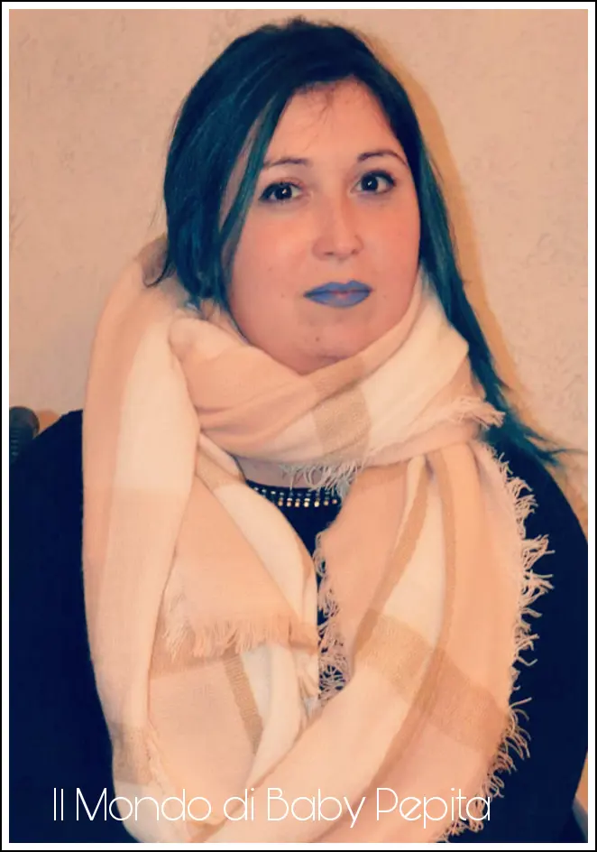

Natural Feelings - Grande Sciarpa Morbida

Ritorniamo a collaborare con Amazon e questa volta è un accessorio da indossare . .Una sciarpa di ottima qualità di una morbidezza unica.

Bellissima anche come copri-spalle/scialle che, essendo abbastanza ampio copre tutte le spalle e il collo e vabbè, inutile dirvi quanto calda sia.

Arriverà in una busta nera di plastica con il marchio della sciarpa, elegante anche come idea regalo (perdonatemi, non sono riuscita a fare una foto in busta).
Ho avuto modo di testare la sciarpa in quest'ultimo viaggio che ho fatto, sono tornata praticamente ieri sera. Anche se è primavera e c'è sole, c'era però molto vento e quindi ho usufruito per bene di questo scialle e ho potuto notare la morbidezza assoluta.

(del viaggio poi ve ne parlerò in un altro post).
Ho scelto la sciarpa dalla tonalità bianca ed il colore in prevalenza è un rosa pallido molto elegante, abbinabile con qualsiasi colore. Sono colori chiari e molto molto belli.

Ai margini della stola, troviamo dei piccoli peneri/frange di ca. 2 cm che la impreziosiscono.
L'acrilico è soffice e la lavorazione della trama ricorda la lana.


Devo essere sincera, non mi aspettavo un prodotto di alta qualità, sono sorpresa e soddisfatta.
Pagando per di più un prezzo davvero piccolo.
Consiglio quindi a tutti di fare quest'acquisto semmai siete interessati sia per un regalo o anche per uso personale. Io per esempio non posso che tenerla io (che è stato il primo pensiero sin da subito, appena l'ho vista) non credo di cederla facilmente :D
Prezzo: 10,99 € Disponibilità in varie colorazioni tutte alle stesso prezzo.
Se volete acquistarla CLICCATE QUI!